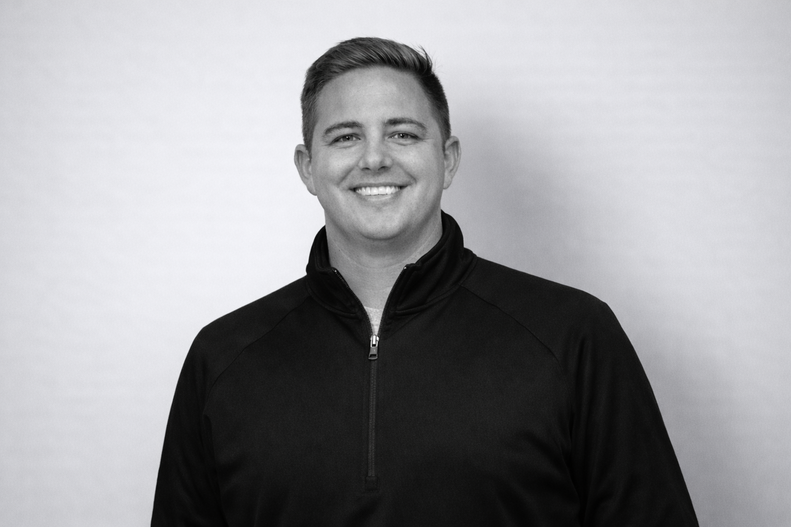
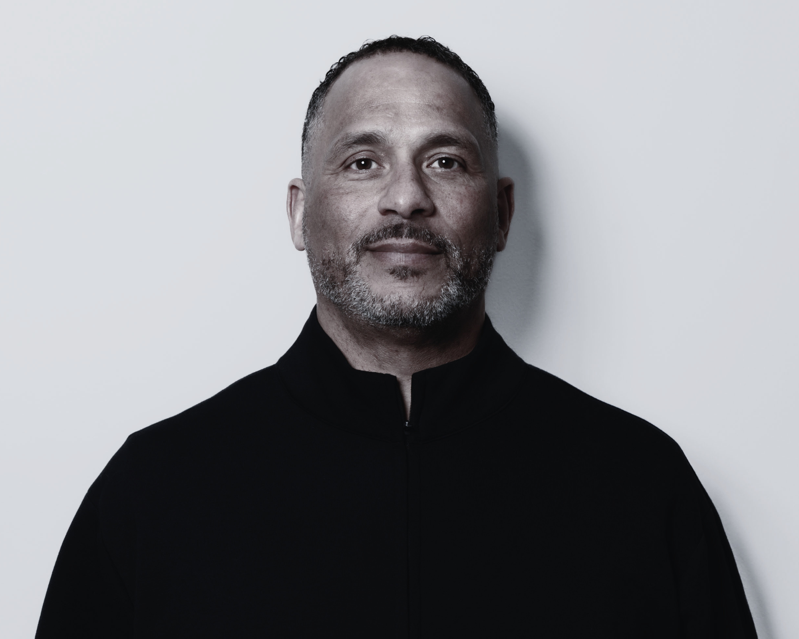
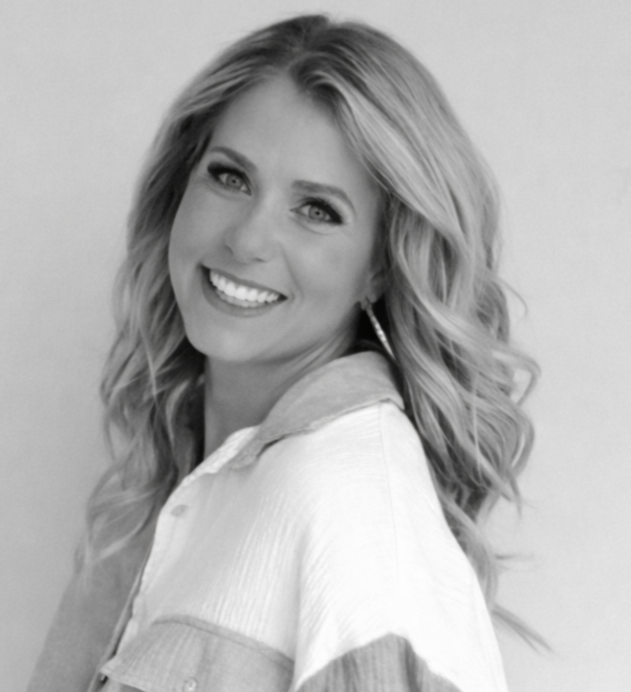
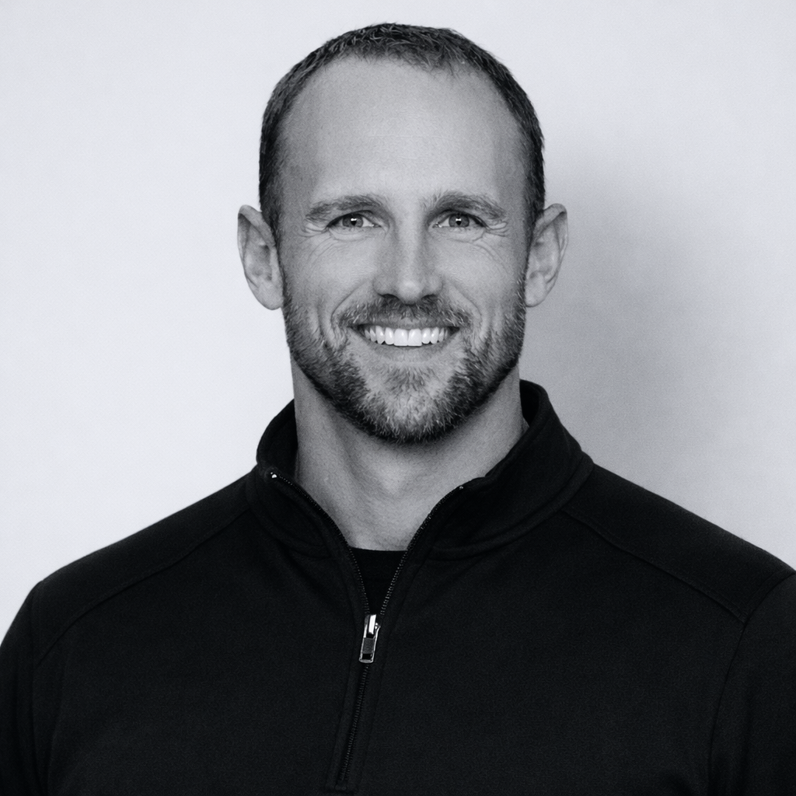
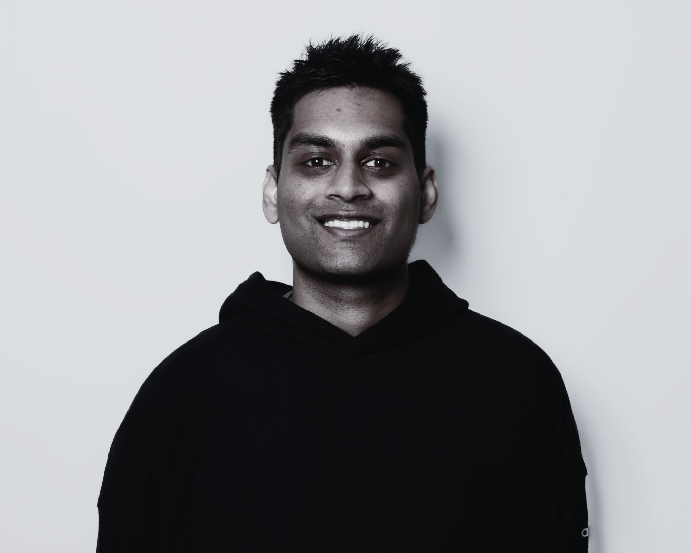
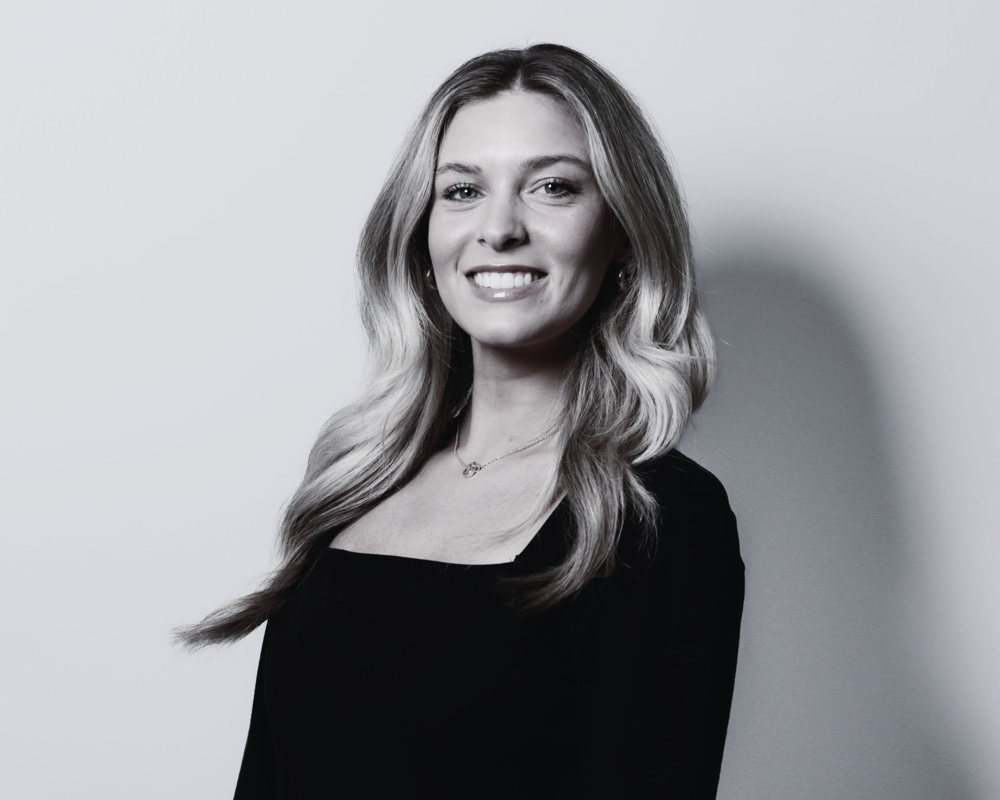
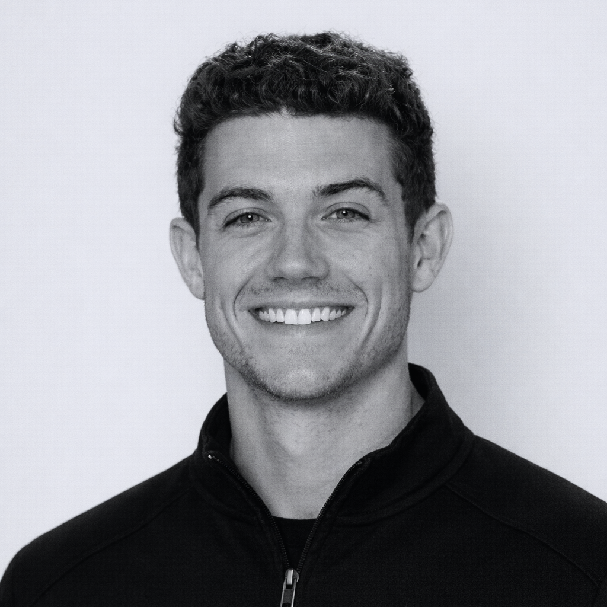
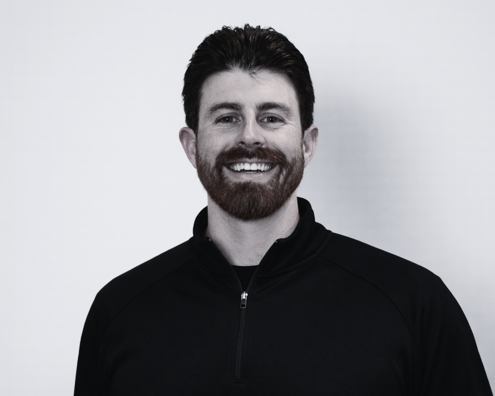

You Don’t Just Get an Agent. You Get a Team.
Representation today requires more than one role. Our team brings together expertise across development, strategy, branding, and athlete support.

Dan Furman
Dan Furman is the Founder and President of Prodigy Sports Group and a recognized voice in the evolving NIL and college sports landscape. A former student-athlete at the University of Pittsburgh, he built his career working inside collegiate athletics, gaining firsthand experience across multiple sports and institutional leadership.
After helping structure more than $150 million in athlete opportunities, Dan saw the need for more knowledgeable and professional representation in a rapidly changing environment. Having operated on both sides of the table, he founded Prodigy to provide athletes with fair, sophisticated, and development-focused guidance—built on real experience, strong relationships, and a long-term approach to career growth.
The visionaries guiding our mission

Mario Washington
Chief Operating Officer
With 33 years of military service, Mario Washington commanded at the company, battalion, and garrison levels, earning a reputation for exceptional performance in both command and high-level staff roles. He leverages his outstanding leadership and planning skills as the Chief Operating Officer for Prodigy Sports Group. Mario is happily married with two children and is an avid sports fan.

Kelsey Thornton
Chief Strategy Officer
Kelsey Thornton serves as Chief Strategy Officer at Prodigy Sports Group, where she leads brand strategy, athlete positioning, and internal structure across the agency. Her background is in marketing; brand development, and business strategy.
She has experience building social media platforms and helping individuals and organizations grow. At Prodigy, Kelsey oversees brand direction; NIL positioning, and communication strategy, helping athletes define who they are.

Andrew Pipes
General Counsel
Andrew holds a B.S. from the United States Air Force Academy, where he played football, an M.B.A. from Oklahoma State University, and earned his J.D. from the University of Kansas in 2018. He built his foundation in real estate, business transactions, and civil litigation, working with both individual and corporate clients across a range of industries.
At Prodigy, Andrew supports athletes and clients through contract review, deal structuring, and legal guidance across business, securities, and real estate matters. His experience in both transactional work and litigation allows him to protect client interests, navigate complex agreements, and ensure long-term stability beyond the deal.
The dedicated team behind your success

Kiran Rao
Operations Coordinator
Kiran Rao leads NIL strategy and operational execution at Prodigy Sports Group. A University of Louisville graduate, he built his foundation in collegiate athletics as a student manager within the basketball program before expanding his relationships across coaching staffs and athletic departments at Georgetown College.
At Prodigy, he combines that hands-on college athletics experience with deep NIL expertise to drive deal execution, organizational strategy, and long-term growth for our athletes.

Baylee Stewart
Athlete Management Coordinator
Baylee brings hands-on experience in the NIL space, working directly with athletes to build their brands and navigate opportunities. She supported a Big Ten football program and developed her expertise in athlete marketing and digital strategy as a graduate of the University of Tennessee.
At Prodigy, she leads athlete brand development, content direction, and partnership alignment, helping athletes grow their visibility and create meaningful opportunities that support long-term career success.

Tre Campbell
Talent Representative
A former Division I player at Georgetown and South Carolina, Tre brings a strong background in high-level playing and elite player development. He gained national recognition during his time at IMG Academy, where he worked with top high school prospects, including multiple NBA Draft selections and nationally recognized All-Americans.
Known as a trusted basketball mind, Tre leverages his relationships with coaches, trainers, and programs nationwide to evaluate talent, guide key decisions, and help athletes build long-term careers.

Rob Peterson
Talent Representative
Rob Peterson is a former collegiate player and coach with deep roots in the basketball world. The son of longtime college and NBA coach and executive Buzz Peterson, he brings both lineage and perspective shaped by a lifetime around the game.
After playing at High Point University under Tubby Smith and coaching at the collegiate level, Rob offers a strong understanding of today’s evolving basketball landscape.
He leverages both his recent coaching experience and lifelong relationships across the sport to help athletes navigate key decisions and position themselves for long-term success.

Sean Mohollen
Talent Representative
Sean Mohollen is a former Division I athlete with a background in sports management and a focused expertise in NIL strategy and athlete brand development. Having competed at the collegiate level himself, he understands the demands athletes face and brings that perspective to every client relationship.
At Prodigy, Sean works directly with athletes and their families to identify the right opportunities, structure meaningful partnerships, and build brands with long-term value. His hands-on approach and commitment to the details ensure athletes can navigate the NIL landscape with clarity and a team behind them.